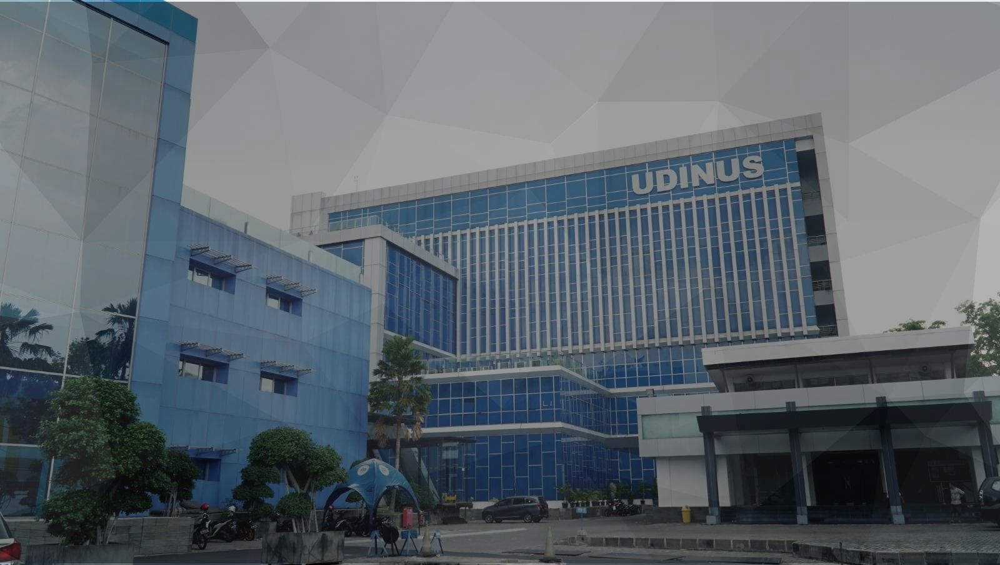

Jl. Imam Bonjol No. 207, Semarang Tengah, Kota Semarang
+6224 3517261
Selamat Datang di Fakultas Ekonomi Bisnis Udinus Kota Semarang

Selamat Datang
Fakultas Ekonomi Bisnis
Universitas Dian Nuswantoro
Kota Semarang
Mulai Sekarang
Pilih Rute Menuju FEB Udinus
Your browser does not support HTML5 video.
Kembali